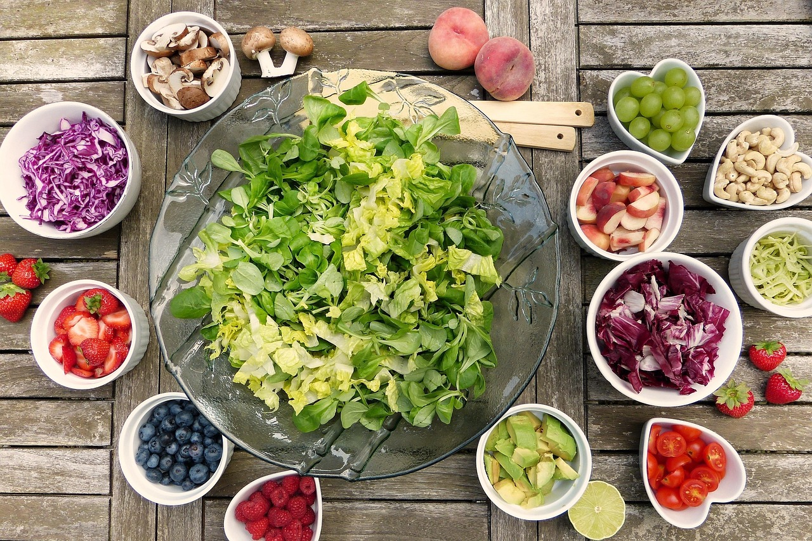

Alimentação: um guia completo
“A alimentação equilibrada é essencial para manter a saúde do corpo e da mente”
Tempo estimado de leitura: 7 minutos
A alimentação equilibrada é fundamental para garantir a saúde do corpo e da mente ao longo da vida. Ela fornece todos os nutrientes essenciais como vitaminas, minerais, proteínas, carboidratos e gorduras boas que o organismo precisa para funcionar corretamente.

Checklist de hábitos alimentares diários
A lista abaixo destaca o que devemos fazer para ter uma boa alimentação pessoal e quais são os principais hábitos alimentares que devemos seguir todos os dias.
Tome um café da manhã nutritivo todos os dias. Começar o dia com uma refeição equilibrada ajuda a manter a energia, o foco e evita exageros nas próximas refeições. Um bom exemplo é combinar uma fruta, um pão integral com proteína (como ovo ou queijo) e uma bebida leve como leite ou chá.
Beba bastante água durante o dia. A hidratação é essencial para o bom funcionamento do corpo. Tomar de 6 a 8 copos de água por dia melhora a digestão, a pele, o humor e evita dores de cabeça. Uma dica simples é ter sempre uma garrafinha por perto.
Consuma frutas, legumes e verduras diariamente. Esses alimentos são fontes de fibras, vitaminas e minerais importantes para a saúde. Tente incluir pelo menos uma fruta no café da manhã ou lanche, e legumes ou verduras no almoço e no jantar.
Monte pratos coloridos e equilibrados. Quanto mais colorido o prato, mais variado em nutrientes ele será. Tente equilibrar alimentos como arroz, feijão, carnes magras, ovos, vegetais e um pouco de gordura boa, como azeite de oliva.
Coma com atenção e sem pressa. Evitar distrações como TV ou celular durante as refeições ajuda a perceber melhor a saciedade, evitando exageros. Comer devagar também melhora a digestão e torna a refeição mais prazerosa.
Tenha lanches saudáveis à disposição. Para não cair na tentação de comer alimentos industrializados, mantenha opções saudáveis por perto, como frutas, castanhas, iogurte natural ou pão integral com alguma pasta caseira.
O que uma boa alimentação traz de benefícios ao decorrer da nossa vida?
A alimentação equilibrada é fundamental em todas as fases da vida, pois ela acompanha e sustenta o desenvolvimento físico, emocional e cognitivo do ser humano desde o nascimento até a velhice. Veja a seguir como essa importância se manifesta em cada etapa:
Infância
Crescimento saudável: Nutrientes como cálcio, ferro, proteínas e vitaminas são essenciais para o desenvolvimento dos ossos, músculos e cérebro. Formação de hábitos: Nessa fase, a criança começa a construir sua relação com a comida. Alimentações equilibradas ajudam a formar bons hábitos que podem durar a vida toda.
Adolescência
Desenvolvimento hormonal e físico: É um período de grandes transformações, exigindo mais energia e nutrientes para suportar o crescimento acelerado. Desempenho escolar: A alimentação afeta diretamente a concentração, memória e disposição para os estudos.
Vida adulta
Manutenção da saúde: Ajuda a manter o peso ideal, níveis saudáveis de colesterol, pressão arterial e glicemia.Prevenção de doenças crônicas: Reduz o risco de infartos, AVC, cânceres e problemas metabólicos. Energia e produtividade: Alimentação equilibrada melhora o rendimento físico e mental no trabalho e na rotina.
Terceira idade
Preservação da massa muscular e óssea: Com o envelhecimento, há perda natural de massa muscular e densidade óssea — proteínas, cálcio e vitamina D se tornam ainda mais importantes. Fortalecimento do sistema imunológico: Idosos têm o sistema imune mais enfraquecido, e uma boa nutrição ajuda a reduzir infecções e complicações. Prevenção de declínio cognitivo: Nutrientes como ômega-3, antioxidantes e vitaminas do complexo B ajudam a manter a memória e a função cerebral.
Hábitos de uma boa alimentação: 3 Perguntas Frequentes
Ainda tem dúvidas sobre bons hábitos alimentares?Confira as respostas abaixo — elas podem esclarecer suas perguntas e complementar nossa lista
Bons hábitos alimentares envolvem escolher alimentos variados e saudáveis no dia a dia, comer nos horários certos, evitar exageros e manter uma boa hidratação. Isso inclui consumir frutas, legumes, verduras, proteínas magras, cereais integrais e reduzir alimentos ultraprocessados, açúcar e sal em excesso.
Comer com calma ajuda o corpo a reconhecer quando está satisfeito, evitando exageros. Além disso, melhora a digestão, reduz o risco de azia e favorece uma relação mais saudável com a comida. Também ajuda a aproveitar melhor o sabor dos alimentos.
Nem sempre! É possível manter uma alimentação saudável com alimentos simples e acessíveis. Feijão, arroz, ovos, legumes da estação e frutas locais são opções nutritivas e econômicas. O segredo está no planejamento e em evitar desperdícios.